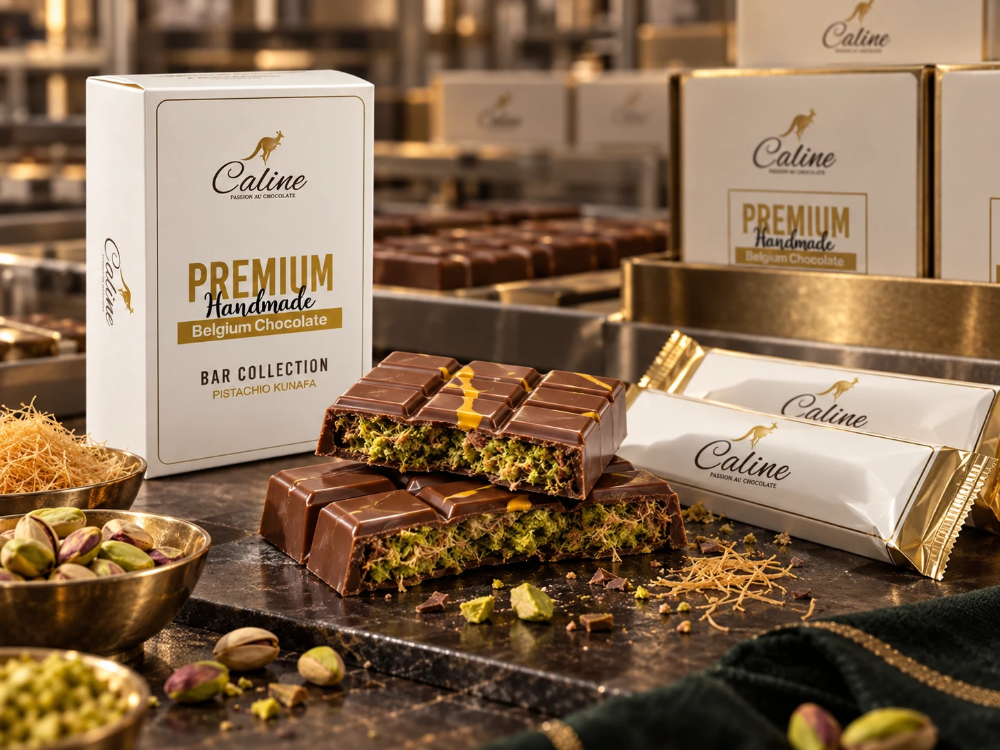

Making the chocolate
The story starts with chocolate production inside the factory.
Manufacturing
That story is rooted in Hamriyah Free Zone, Sharjah, where chocolate making, moulding and packing have all been part of Caline’s journey.
Hamriyah Free Zone
A Hamriyah Free Zone feature followed Caline’s production from raw chocolate through moulding and packaging.
The story starts with chocolate production inside the factory.
Moulding turns the chocolate into finished forms ready for the next stage.
Packaging is where the making process meets the final presentation.
Caline also appeared among food-processing and manufacturing businesses connected with Sharjah Food Park.

A closer look
Pistachio, kunafa and chocolate come together through texture, shaping and finishing — then the presentation completes the story.
Part of Caline’s heritage
In a published interview, Caline Factories’ CEO described handmade Belgian chocolate as part of the company’s work from 2016, together with a bean-to-bar process across three factories and final manufacturing in Hamriyah Free Zone.
For today’s production and business capabilities, speak with Caline directly.
Working with Caline?
References